컴퓨터응용가공산업기사 (2014-03-02 기출문제)
1과목: 기계가공법 및 안전관리
1. 서멧(Cermet)공구를 제작하는 가장 적합한 방법은?
- WC(텅스텐 탄화물)을 Co로 소결
- Fe에 Co를 가한 소결초경 합금
- 주성분이 W, Cr, Co, Fe로 된 주조 합금
- Al2O3분말에 TiC 분말을 혼합 소결
(정답률: 65%)

2. 주축대의 위치를 정밀하게 하기 위하여 나사식 측정장치, 다이얼게이지, 광학적 측정장치를 갖추고 있는 보링머신은?
- 수직 보링머신
- 보통 보링머신
- 지그 보링머신
- 코어 보링머신
(정답률: 67%)
3. 일반적으로 각도 측정에 사용되는 것이 아닌 것은?
- 컴비네이션 세트
- 나이프 에지
- 광학식 클리노미터
- 오토 콜리메이터
(정답률: 73%)
4. 기계 작업시 안전 사항으로 가장 거리가 먼 것은?
- 기계 위에 공구나 재료를 올려놓는다.
- 선반 작업시 보호안경을 착용한다.
- 사용 전 기계ㆍ기구를 점검한다.
- 절삭공구는 기계를 정지시키고 교환한다.
(정답률: 93%)
5. 기어 피치원의 지름이 150mm, 모듈(module)이 5인표준형 기어의 잇수는? (단, 비틀림각은 30°이다.)
- 15개
- 30개
- 45개
- 50개
(정답률: 75%)
6. 절삭공구의 구비조건으로 틀린 것은?
- 고온 경도가 높아야 한다.
- 내마모성이 좋아야 한다.
- 마찰계수가 적어야 한다.
- 충격을 받으면 파괴되어야 한다.
(정답률: 94%)
7. 선반에서 가공할 수 있는 작업이 아닌 것은?
- 기어절삭
- 테이퍼절삭
- 보링
- 총형절삭
(정답률: 72%)
8. 센터리스 연삭작업의 특징이 아닌 것은?
- 센터구멍이 필요 없는 원통 연삭에 편리하다.
- 연속작업을 할 수 있어 대량생산에 적합하다.
- 대형 중량물도 연삭이 용이하다.
- 가늘고 긴 가공물의 연삭에 적합하다.
(정답률: 74%)
9. 공기 마이크로메타를 그 원리에 따라 분류할 때 이에 속하지 않는 것은?
- 유량식
- 배압식
- 광학식
- 유속식
(정답률: 76%)
10. 밀링머신에 관한 설명으로 옳지 않는 것은?
- 테이블의 이송속도는 밀링커터 날 1개당 이송거리×커터의 날 수×커터의 회전수로 산출한다.
- 플레노형 밀링머신은 대형의 공작물 또는 중량물의 평면이나 홈 가공에 사용한다.
- 하향절삭은 커터의 날이 일감의 이송방향과 같으므로 일감의 고정이 간편하고 뒤틈 제거장치가 필요 없다.
- 수직 밀링머신은 스핀들이 수직방향으로 장치되며 엔드밀로 홈 깎기, 옆면 깎기 등을 가공하는 기계이다.
(정답률: 82%)
11. 측정기, 피측정물, 자연 환경 등 측정자가 파악할 수 없는 변화에 의하여 발생하는 오차는?
- 시차
- 우연오차
- 계통오차
- 후퇴오차
(정답률: 84%)
12. 길이가 짧고 지름이 큰 공작물을 절삭하는데 사용되는 선반으로 면판을 구비하고 있는 것은?
- 수직선반
- 정면선반
- 탁상선반
- 터릿선반
(정답률: 64%)
13. 선반의 심압대가 갖추어야 할 조건으로 틀린 것은?
- 베드의 안내면을 따라 이동할 수 있어야 한다.
- 센터는 편위 시킬 수 있어야 한다.
- 베드의 임의의 위치에서 고정할 수 있어야 한다.
- 심압축은 중공으로 되어 있으며 끝부분은 내셔널 테이퍼로 되어 있어야 한다.
(정답률: 68%)
14. 연삭액의 구비조건으로 틀린 것은?
- 거품 발생이 많을 것
- 냉각성이 우수할 것
- 인체에 해가 없을 것
- 화학적으로 안정될 것
(정답률: 93%)
15. 기어가 회전운동을 할 때 접촉하는 것과 같은 상대운동으로 기어를 절삭하는 방법은?
- 창성식 기어 절삭법
- 모형식 기어 절삭법
- 원판식 기어 절삭법
- 성형공구 기어 절삭법
(정답률: 77%)
16. 마이크로미터 측정면의 평면도 검사에 가장 적합한 측정기기는?
- 옵티컬 플랫
- 공구 현미경
- 광학식 클리노미터
- 투영기
(정답률: 69%)
17. 초음파 가공에 주로 사용하는 연삭입자의 재질이 아닌 것은?
- 산화알루미나계
- 다이아몬드 분말
- 탄화규소계
- 고무분말계
(정답률: 67%)
18. 해머 작업의 안전수칙에 대한 설명으로 틀린 것은?
- 해머의 타격면이 넓어진 것을 골라서 사용한다.
- 장갑이나 기름이 묻은 손으로 자루를 잡지 않는다.
- 담금질된 재료는 함부로 두드리지 않는다.
- 쐐기를 박아서 해머의 머리가 빠지지 않는 것을 사용한다.
(정답률: 81%)
19. 고속가공의 특성에 대한 설명이 옳지 않은 것은?
- 황삭부터 정삭까지 한 번의 셋업으로 가공이 가능하다.
- 열처리된 소재는 가공할 수 없다.
- 칩(Chip)에 열이 집중되어, 가공물은 절삭열 영향이 적다.
- 절삭저항이 감소하고, 공구수명이 길어진다.
(정답률: 66%)
20. 밀링머신에서 단식분할법을 사용하여 원주를 5등분하려면 분할크랭크를 몇 회전씩 돌려가면서 가공하면 되는가?
- 4
- 8
- 9
- 16
(정답률: 59%)
2과목: 기계설계 및 기계재료
21. 일정한 온도 영역과 변형속도 영역에서 유리질처럼 늘어나며, 이때 강도가 낮고, 연성이 크므로 작은 힘으로 복잡한 형상의 성형이 가능한 기능성 재료는?
- 형상기억 합금
- 초소성 합금
- 초탄성 합금
- 초인성 합금
(정답률: 71%)
22. 특수강에서 합금원소의 주요한 역할이 아닌 것은?
- 기계적, 물리적, 화학적 성질의 개선
- 황 등의 해로운 원소 제거
- 소성가공성의 감소
- 오스테나이트 입자 조정
(정답률: 60%)
23. 금속의 냉각속도가 빠르면 조직은 어떻게 되는가?
- 조직이 치밀해진다.
- 조직이 거칠어진다.
- 불순물이 적어진다.
- 냉각속도와 조직은 아무 관계가 없다.
(정답률: 70%)
24. 다음 중 구리의 특성에 대한 설명으로 틀린 것은?
- 전기 및 열의 전도성이 우수하다.
- 전연성이 좋아 가공이 용이하다.
- 화학적 저항력이 작아 부식이 잘 된다.
- 아름다운 광택과 귀금속적 성질이 우수하다.
(정답률: 74%)
25. 다음 중 합금강을 제조하는 목적으로 적당하지 않은 것은?
- 내식성을 증대시키기 위하여
- 단접 및 용접성 향상을 위하여
- 결정입자의 크기를 성장시키기 위하여
- 고온에서의 기계적 성질 저하를 방지하기 위하여
(정답률: 76%)
26. 4% Cu, 2% Ni, 1.5% Mg 이 함유된 Al 합금으로서 내열성이 크고, 기계적 성질이 우수하며 실린더 헤드나 피스톤 등에 적합한 합금은?
- 실루민
- Y-합금
- 로엑스
- 두랄루민
(정답률: 78%)
27. 형상기억합금인 니티놀(nitinol)의 성분은?
- Cu-Zn
- Ti-Ni
- Ni-Cr
- Al-Cu
(정답률: 85%)
28. 아연을 5~20% 첨가한 것으로 금색에 가까워 금박 대용으로 사용하며 특히 화폐, 메달 등에 주로 사용되는 황동은?
- 톰백
- 실루민
- 문쯔메탈
- 고속도강
(정답률: 84%)
29. 인청동에서 인(P)의 영향이 아닌 것은?
- 쇳물의 유동을 좋게 한다.
- 강도와 인성을 증가시킨다.
- 탄성을 나쁘게 한다.
- 내식성을 증가시킨다.
(정답률: 71%)
30. 다음 구조용 복합재료 중에서 섬유강화 금속은?
- FRTP
- SPF
- FRM
- FRP
(정답률: 86%)
31. 고무 스프링의 일반적인 특징에 관한 설명으로 틀린 것은?
- 1개의 고무로 2축 또는 3축 방향의 하중에 대한 흡수가 가능하다.
- 형상을 자유롭게 할 수 있고, 다양한 용도가 가능하다.
- 방진 및 방음 효과가 우수하다.
- 특히 인장하중에 대한 방진효과가 우수하다.
(정답률: 57%)
32. 속도비 3:1, 모듈3, 피니언(작은 기어)의 잇수 30인 한 쌍의 표준 스퍼 기어의 축간 거리는 몇 mm 인가?
- 60
- 100
- 140
- 180
(정답률: 48%)
33. 10kN의 축하중이 작용하는 볼트에서 볼트 재료의 허용인장응력이 60MPa 일 때 축하중을 견디기 위한 볼트의 최소 골지름은 약 몇 mm 인가?
- 14.6
- 18.4
- 22.5
- 25.7
(정답률: 38%)
34. 볼트 이음이나 리벳 이음 등과 비교하여 용접 이음의 일반적인 장점으로 틀린 것은?
- 잔류응력이 거의 발생하지 않는다.
- 기밀 및 수밀성이 양호하다.
- 공정수를 줄일 수 있고, 제작비가 싼 편이다.
- 전체적인 제품 중량을 적게 할 수 있다.
(정답률: 76%)
35. 평벨트 전동장치와 비교하여 V-벨트 전동장치에 대한 설명으로 옳지 않은 것은?
- 접촉 면적이 넓으므로 비교적 큰 동력을 전달한다.
- 장력이 커서 베어링에 걸리는 하중이 큰 편이다.
- 미끄럼이 작고 속도비가 크다.
- 바로걸기로만 사용이 가능하다.
(정답률: 58%)
36. 허용전단응력 60N/mm2의 리벳이 있다. 이 리벳에 15kN의 전단 하중을 작용시킬 때 리벳의 지름은 약 몇 mm 이상이어야 안전한가?
- 17.85
- 20.50
- 25.25
- 30.85
(정답률: 39%)
37. 400rpm으로 전동축을 지지하고 있는 미끄럼 베어링에서 저널의 지름은 6cm, 저널의 길이는 10cm 이고, 4.2kN의 레이디얼 하중이 작용할 때, 베어링 압력은 약 몇 MPa 인가?
- 0.5
- 0.6
- 0.7
- 0.8
(정답률: 51%)
38. 다음 중 유연성 커플링(flexible coupling)이 아닌 것은?
- 기어 커플링
- 셀러 커플링
- 롤러 체인 커플링
- 벨로즈 커플링
(정답률: 48%)
39. 어느 브레이크에서 제동동력이 3kW이고, 브레이크 용량(brake capacity)을 0.8N/mm2ㆍm/s라고 할 때 브레이크 마찰면적의 크기는 약 몇 mm2인가?
- 3200
- 2250
- 5500
- 3750
(정답률: 48%)
40. 지름이 4cm의 봉재에 인장하중이 1000N이 작용할 때 발생하는 인장응력은 약 얼마인가?
- 127.3N/cm2
- 127.3N/mm2
- 80 N/cm2
- 80 N/mm2
(정답률: 52%)
3과목: 컴퓨터응용가공
41. 선삭 공정에서 작업물의 외경이 200mm, 절삭속도가 100m/min, 1회전당 공구이송량은 0.1 mm 일 때, 공구의 이송속도(mm/min)는 약 얼마인가?
- 8
- 16
- 32
- 48
(정답률: 62%)
42. 다음 2차원 평면상에서 물체를 만큼 반시계방향으로 회전변환하려고 한다. 이 경우 보기의 2차원 변환 행렬의 요소 중 c의 값은?
- cosθ
- sinθ
- -sinθ
- -cosθ
(정답률: 67%)
43. 다음 중 분산처리형 CAD/CAM 시스템의 특징으로 틀린 것은?
- 컴퓨터 시스템의 사용상의 편리성과 확장성을 증가 시킬 수 있다.
- 자료처리 및 계산 속도를 증가시킬 수 있어서 설계 및 가공 분야에서 생산성을 향상시킬 수 있다.
- 주시스템과 부시템에서 동일한 자료처리 및 계산 작업이 동시에 이루어지므로 데이터의 신뢰성이 높다.
- 시스템이 하나가 고장이 나더라도 다른 시스템은 정상적으로 작동할 수 있도록 구성되어 컴퓨터 시스템의 신뢰성과 활용성을 높일 수 있다.
(정답률: 68%)
44. CAD/CAM 시스템에서 컵이나 병 등의 형상을 만들 때 회전곡면(revolution surface)을 이용한다. 다음 중 revolution 작업시 필요한 자료가 아닌 것은?
- 회전각도
- 회전중심축
- 회전단면선
- 옵셋(offset)량
(정답률: 80%)
45. 다음 중 서피스 모델링(surface modeling)에 관한 설명으로 틀린 것은?
- NC data를 생성할 수 있다.
- 명암(shade) 알고리즘을 제공할 수 있다.
- 은선 제거가 가능하고, 면의 구분이 가능하다.
- 물체 내부 데이터를 가지고 있어 유한요소법(FEM)의 적용이 용이하다.
(정답률: 75%)
46. 다음 중 방정식 “ax+bx+c=0” 으로 표현 가능한 항목은?
- circle
- spline curve
- Bezier curve
- polygonal line
(정답률: 57%)
47. 다음 중 CAD/CAM 인터페이스에서 RS-232C를 사용하여 데이터를 전송할 때 데이터가 정확히 보내졌는지 검사하는 방법은?
- Odd Parity
- Even Parity
- Block Cheek
- Parity Check Bit
(정답률: 67%)
48. 다음 중 블렌딩 함수로 베른스타인(Bernstein) 다항식을 사용한 곡선 방정식은?
- NURBS 곡선
- 베지어(Bezier)곡선
- B-spline 곡선
- 퍼거슨(Ferguson)곡선
(정답률: 72%)
49. 다음 중 B-Rep 모델의 기본 요소가 아닌 것은?
- 면(face)
- 모서리(edge)
- 꼭지점(vertex)
- 좌표(coordinates)
(정답률: 79%)
50. 다음 중 미리 정해진 연속된 단면을 덮는 표면 곡면을 생성시켜 닫혀진 부피 영역 혹은 솔리드 모델을 만드는 모델링 방법은?
- 스위핑(sweeping)
- 스키닝(skinning)
- 트위킹(tweaking)
- 리프팅(lifting)
(정답률: 58%)
51. 3차원 형상모델 중 CSG(Constructive Solid Geometry) 방식에 관한 설명으로 옳은 것은?
- 중량 계산이 곤란하다.
- 데이터의 작성이 곤란하다.
- 3차원 형상 작성 후 평면투상도 작성이 효과적이다.
- 블리언 연산자를 사용하여 명확한 모델 생성이 용이하다.
(정답률: 57%)
52. 다음 중 잉크젯 또는 레이저 프린터의 해상도를 나타내는 단위는?
- LPM
- PPM
- DPI
- CPM
(정답률: 69%)
53. 다음 중 신속조형 및 제조(RP&M, Rapid Prototyping & Manufacturing) 공정의 특징이 아닌 것은?
- 특징형상(feature) 정보를 필요로 하는 공정계획이 없어도 되기 때문에 특징형상기반설계나 특징형상인식이 필요 없다.
- RP&M 공정은 재료를 더해가는 것이 아니라 재료를 제거해 나가는 공정이기 때문에 소재의 형상을 정의 할 필요가 있다.
- 부품이 한 번의 작업으로 제작되기 때문에 여러 가지 셋업이나 소재를 취급하는 복잡한 과정을 정의할 필요가 없다.
- RP&M 공정은 어떤 도구를 필요로 하는 공정이 아니기 때문에 금형의 설계와 제조가 필요 없다.
(정답률: 46%)
54. 두 벡터 a, b의 내적과 외적이 [보기]와 같은 때 다음 중 벡터의 성질로 틀린 것은? (문제 오류로 실제 시험에서는 1, 4번이 정답처리 되었습니다. 여기서는 1번을 누르면 정답 처리 됩니다.)
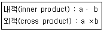
- a×b=b×a
- aㆍa=|a|2
- a×a=0
- aㆍb=|a|cosθ
(정답률: 76%)
55. 다음 중 곡면 모델링에서 두 개 이상의 곡선에서 안내 곡선(기준곡선)을 따라 이동곡선(단면곡선)이 이동 규칙에 의해 이동되면서 생성되는 곡면은?
- sweep
- revolve
- patch
- blending
(정답률: 77%)
56. 다음 중 일반적으로 3차원 형상 정보를 표현하고 데이터를 교환하는 표준으로 적당하지 않은 것은?
- IGES
- STEP
- DWG
- STL
(정답률: 70%)
57. 한 쌍의 직교축과 단위길이를 사용하여 평면상의 한 점의 위치를 표시하는 방식으로 한 점의 거리와 각도를 반시계 방식으로 표시하는 좌표계는?
- 극좌표계
- 직교좌표계
- 원통좌표계
- 구면좌표계
(정답률: 53%)
58. 다음 중 자유곡면의 CNC 가공을 위하여 고려하여야 할 사항과 가장 거리가 먼 것은?
- 공구간섭 방지
- 적삭조건 지정
- 자재수급 계획
- 가공경로 계획
(정답률: 87%)
59. 다음 중 NURBS 곡선에 관한 설명으로 틀린 것은?
- 일반적인 B-spline 곡선을 포함한다.
- 모든 조정점을 지나는 부드러운 곡선이다.
- 원, 타원, 포물선, 쌍곡선 등 원추 곡선을 정확하게 나타낼 수 있다.
- 3차 NURBS 곡선은 특정 노트구간에서 4개의 조정점 외에 4개의 가중치(weight value)와 절점(knot) 벡터의 정보가 이용된다.
(정답률: 68%)
60. 그림의 볼엔드밀에서 공구의 중심 C는 (10, 10, 10)이고, 공구의 지름은 10, 공구의 회전축 방향의 단위벡터 u는 (0, 0, 1), 접촉점에서의 곡면의 단위법선 벡터 n은 (-1/√2, 0, 1/√2)이다. 이 때 CL-데이터는?
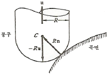
- (10, 10, 5)
- (10, 10, 15)
- (10+5/√2, 10, 10-5/√2)
- (10-5/√2, 10, 10+5/√2)
(정답률: 35%)
4과목: 기계제도 및 CNC공작법
61. KS 규격에 따른 회 주철품의 재료 기호는?
- WC
- SB
- GC
- FC
(정답률: 74%)
62. 다음 표면의 결 도시기호에서 지시하는 가공법은?
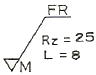
- 밀링 가공
- 브로칭 가공
- 보링 가공
- 리머 가공
(정답률: 71%)
63. 그림과 같이 제 3각법으로 나타낸 정투상도에서 평면도로 알맞은 것은?
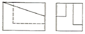
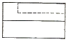
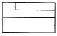
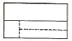
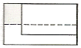
(정답률: 72%)
64. 다음 투상도 중 KS 제도 통칙에 따라 올바르게 작도된 투상도는?
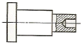
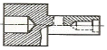
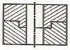
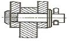
(정답률: 79%)
65. 다음 중 일반적으로 길이 방향으로 단면하여 나타내도 무방한 것은?
- 볼트(Bolt)
- 키(Key)
- 리벳(Rivet)
- 미끄럼 베어링(Sliding Bearing)
(정답률: 50%)
66. 도면의 재질란에 SM25C 의 재료기호가 기입되어있다. 여기서 “25” 가 나타내는 뜻은?
- 탄소 함유량 22~28%
- 탄소 함유량 0.22~0.28%
- 최저 인장 강도 25kPa
- 최저 인장 강도 25MPa
(정답률: 67%)
67. 그림과 같은 기하공차의 해석으로 가장 적합한 것은?
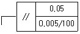
- 지정 길이 100mm에 대하여 0.⑤mm, 전체길이에 대해 0.0⑤mm의 대칭도
- 지정 길이 100mm에 대하여 0.⑤mm, 전체길이에 대해 0.0⑤mm의 평행도
- 지정 길이 100mm에 대하여 0.0⑤mm, 전체길이에 대해 0.⑤mm의 대칭도
- 지정 길이 100mm에 대하여 0.0⑤mm, 전체길이에 대해 0.⑤mm의 평행도
(정답률: 66%)
68. 도면에서 두 종류 이상의 선이 같은 장소에서 겹치게 될 경우 표시되는 선의 우선순위가 높은 것부터 낮은 순서대로 나열되어있는 것은?
- 외형선, 숨은선, 절단선, 중심선
- 외형선, 절단선, 숨은선, 중심선
- 외형선, 중심선, 숨은선, 절단선
- 절단선, 중심선, 숨은선, 외형선
(정답률: 81%)
69. 깊은 홈 볼 베어링의 안지름이 25mm 일 때 이 베어링의 안지름 번호는?
- 00
- ⑤
- 25
- 50
(정답률: 78%)
70. 도면의 공차 치수는 어떤 끼워 맞춤인가?
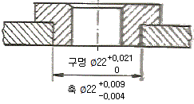
- 헐거운 끼워맞춤
- 가열 끼워맞춤
- 중간 끼워맞춤
- 억지 끼워맞춤
(정답률: 57%)
71. 다음 중 CNC 선반에서의 조작방법으로 가장 적절하지 않은 것은?
- 급속 이송시 충돌에 유의한다.
- 전원은 순서대로 공급하고 차단한다.
- 운전 및 조작은 순서에 의해서 작동시킨다.
- 프로그램 수정시에는 반드시 등록된 프로그램을 삭제한다.
(정답률: 91%)
72. 다음 중 CNC 와이어 컷 방전가공에서 세컨드 컷가공의 목적에 적합하지 않은 것은?
- 다이 형상에서의 돌기부분 제거
- 코너부의 형상에서 보강 및 경도 보정
- 면조도의 향상과 가공면의 연화층 제거
- 가공물의 내부 응력 개방 후의 형상 수정
(정답률: 40%)
73. 다음 중 CNC 시스템의 구성에 있어 사람의 손과 발의 역할을 하는 기구는?
- 서보기구
- 주축기구
- 프로그램 기구
- 가공기구
(정답률: 78%)
74. 다음 중 NC 공작기계의 제어방식 종류에 속하지 않는 것은?
- 나사절삭 제어
- 윤곽절삭 제어
- 직선절삭 제거
- 위치결정 제어
(정답률: 71%)
75. 다음과 같은 머시닝센터 프로그램에서 지령 워드 “P"의 의미로 옳은 것은?
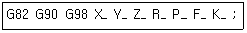
- 반복 횟수
- 이송 속도
- 드웰 지령
- 구멍 가공의 깊이
(정답률: 73%)
76. 다음은 CNC 선반 프로그램의 일부분이다. N3 블록에서 주축 회전수는 몇 rpm인가?
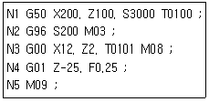
- 200
- 3000
- 53⑤
- 6000
(정답률: 60%)
77. 다음 중 비절삭 시간을 단축하기 위하여 머시닝 센터에 부착되는 장치는?
- 아암(arm)
- 베이스와 컬럼
- 컨트롤장치
- 자동공구교환장치(ATC)
(정답률: 89%)
78. 다음과 같은 CNC 선반 프로그램에 대한 설명으로 틀린 것은?
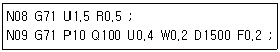
- P10은 지령절의 첫 번째 전개번호이다.
- Q100은 지령절의 마지막 전개번호이다.
- W0.2는 Z축 방향의 정삭여유이다.
- U1.5는 X축 방향의 정상여유이다.
(정답률: 59%)
79. 머시닝센터에서 M10 × 1.5 의 나사 가공시 필요한 드릴의 지름은?
- 7.0mm
- 8.5mm
- 10.0mm
- 11.5mm
(정답률: 85%)
80. 다음 중 CNC 선반에서 그림과 같은 가상인선(날끝) 번호와 가공의 내용이 바르게 짝지어진 것은?
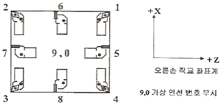
- 1번 : 센터 그릴 및 드릴링 작업
- 2번 : 외경 홈 및 외경 나사 작업
- 3번 : 외경 막깎기 및 다듬질 작업
- 4번 : 내경 홈 및 내경 나사 작업
(정답률: 62%)
따라서, Al2O3분말에 TiC 분말을 혼합 소결하는 것이 가장 적합한 방법입니다. 이는 TiC가 고강도와 내마모성이 뛰어난 세라믹이며, Al2O3는 금속과의 결합력이 높은 세라믹이기 때문입니다. 또한, 이 방법은 비교적 간단하고 경제적인 방법이며, 고강도와 내마모성이 뛰어난 서멧을 제작할 수 있습니다.